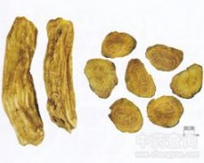

土大黄

拼音
Tǔ Dài Huánɡ
别名
红筋大黄、金不换[江西、湖北]、血三七、化雪莲、鲜大青[江苏苏州]
来源
为蓼科酸模属植物土大黄Rumex madaio Makino[R. daiwoo Makino]，以根和叶入药。秋季挖根，洗净，切片，晒干或鲜用。叶随用随采。
生境分布
生于山脚、路边、田野；亦有栽培。分布于山东、江苏、江西、河南、湖北、湖南及广东等省。
药材特点
多年生草本，高1米左右。根肥厚而大，黄色。茎直立，紫绿色。基生叶具长柄；叶片卵形或卵状椭圆形，长15～25厘米，宽6～16厘米，先端钝，基部圆形或心形，全缘，背面有明显的疣状凸起，茎生叶卵状披针形，互生,茎上部叶渐小，变为苞叶，叶脉红色；托叶膜质。夏季开淡绿色小花，由叶腋抽出花轴，轮生多数小花，排列成大形圆锥花序。花被6片，雄蕊6，雌蕊子房1室，顶端有3花柱，柱头毛状。瘦果卵形，有3棱，茶褐色。
性状
干燥根肥厚粗大，外表暗褐色，皱折而不平坦，残留多数细根。一般切成块状，断面黄色，可见有由表面凹入的深沟条纹。味苦。
性味
苦、辛，凉。
功能主治
清热解毒，止血，祛瘀，通便，杀虫。用于肺脓疡，肺结核咯血，衄血，流行性乙型脑炎，急、慢性肝炎，便秘；外用治跌打损伤，烧烫伤，痈疖肿毒，流行性腮腺炎，疥疮，湿疹，皮炎。
用法用量
根、叶3～5钱（鲜品0.5～1两）；外用适量，研末敷患处。
化学成分
根含蒽醌类。
药理作用
1：本品有止血作用
摘录
《全国中草药汇编》